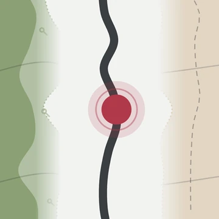
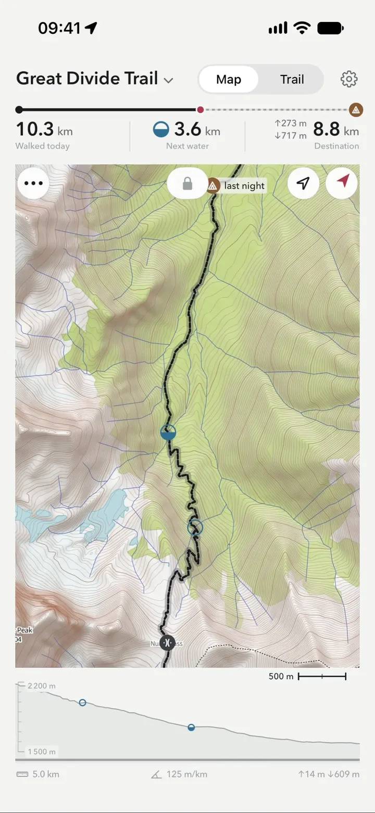

Made in Switzerland
Thru-hiking navigation — offline maps for the whole trail
Trails with complete offline maps in Corridor:
Made by thru-hikers for thru-hikers. This app is hand-tailored to what you need on trail.
Participate in beta testing NOWLaunching October 25, 2026 ·
Launching March 2027 ·
Offline and free Section guide Everything important in one view Easy water reports

Launching October 25, 2026 ·
Launching March 2027 ·